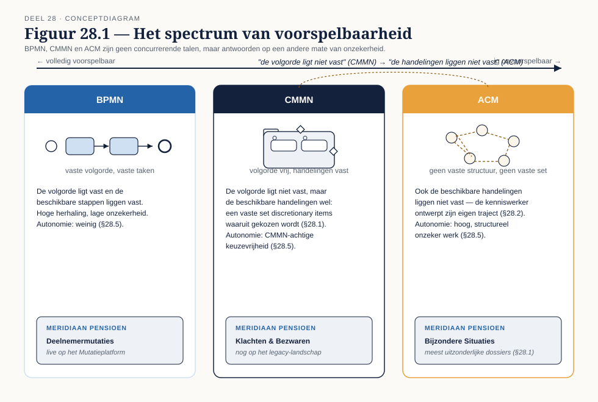
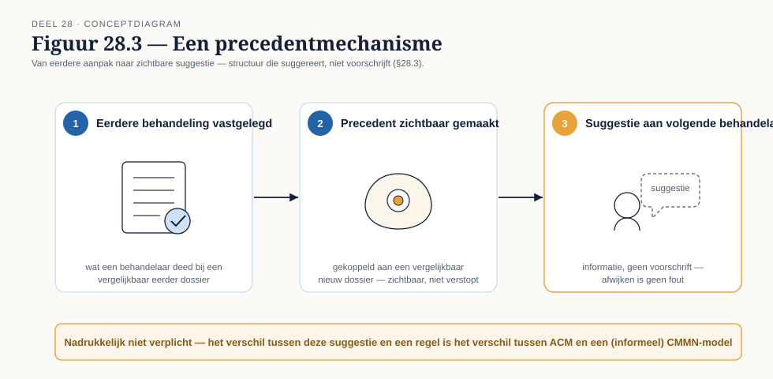
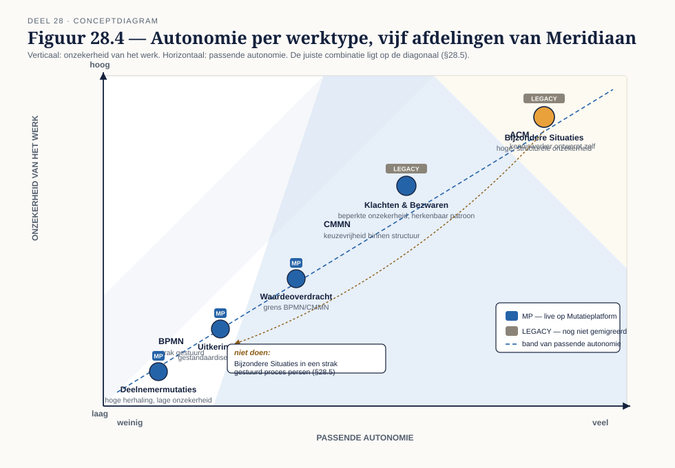

Deel 28 — Adaptive case management en kenniswerk
Reader · Ductus-cursus BPMN, CMMN & DMN · niveau 3 (meesterschap) · deel 28 van 30 · studielast ± 6 uur
Dit materiaal bereidt voor op het examen OCEB 2 Business Advanced van de Object Management Group en, waar van toepassing, op de CBPP-certificering van ABPMP. Het is geen vervanging van het officiële examenmateriaal.
Leerdoelen
Na dit deel kun je:
- De grenzen van CMMN benoemen en herkennen wanneer je erbuiten valt.
- De theorie van adaptive case management toepassen op onvoorspelbaar werk.
- Ontwerpen voor autonomie op organisatieniveau in plaats van per casemodel.
- Prestatie meten bij kenniswerk zonder de autonomie te ondermijnen.
Voorbij wat CMMN kan vangen
Deel 27 schaalde regelgebaseerde besluitvorming op tot een heel landschap. Dit deel gaat de andere kant op: naar het deel van het werk dat zich niet in regels, en zelfs niet in een casemodel, laat vangen. Elke stelselovergang van deze omvang kent uitzonderingsgevallen die niemand vooraf kan opsommen — niet omdat de volgorde van handelingen onbekend is (dat is CMMN's domein, deel 17), maar omdat de handelingen zelf nog niet bestaan totdat iemand ze verzint.
28.1 Waar CMMN ophoudt
CMMN modelleert werk waarvan de volgorde niet vooraf vastligt, maar waarvan de beschikbare handelingen wel bekend zijn: een vaste set taken, discretionary items en plan fragments (deel 17, §17.1, §17.3) waaruit een behandelaar kiest. Er is een grens waar zelfs dat niet meer opgaat — werk waarvan de beschikbare handelingen zelf niet vooraf bekend zijn, omdat het probleem nieuw genoeg is dat niemand van tevoren kan zeggen welke acties relevant zullen zijn.
Het verschil in één zin. "De volgorde ligt niet vast" is CMMN. "De mogelijke handelingen liggen niet vast" is adaptive case management (ACM). Bij Meridiaan is het meest uitzonderlijke deel van Bijzondere Situaties — dossiers die geen van de bestaande discretionary items dekken, bijvoorbeeld ongebruikelijke samenloop tussen invaren en een lopend echtscheidingsconvenant — een kandidaat voor deze grens.
28.2 De ACM-gedachte
Waar CMMN de behandelaar keuzevrijheid geeft binnen een vooraf ontworpen structuur, gaat ACM een stap verder: de kenniswerker is zelf de ontwerper van zijn traject. Het dossier is geen gestuurde structuur (een casemodel met discretionary items) maar een gedeelde werkruimte — documenten, notities, communicatie, aantekeningen van eerdere stappen — waarin de behandelaar zelf bepaalt wat de volgende zinvolle actie is, zonder dat het systeem die actie hoeft te herkennen of te faciliteren als vooraf gedefinieerde optie.
28.3 Patronen voor onvoorspelbaar werk
Zonder vooraf gedefinieerde handelingen kun je nog steeds structuur bieden, mits die structuur suggereert in plaats van voorschrijft:
Sjablonen die suggereren. Een startpunt (bijvoorbeeld: een checklist van vragen die bij vergelijkbare eerdere dossiers relevant bleken) zonder dat afwijken ervan een fout is.
Opgebouwde precedenten. Wat een behandelaar bij een eerder, vergelijkbaar dossier deed, wordt zichtbaar voor de volgende behandelaar — niet als voorschrift, maar als informatie.
Vastleggen zonder verplichten. Wat werkte, komt beschikbaar voor het vervolg, zonder dat het gebruiken ervan verplicht wordt — het verschil tussen een suggestie en een regel is precies het verschil tussen ACM en een (informeel) CMMN-model.
28.4 Producten en concepten
Op de markt bestaan platformen die zich specifiek richten op dynamic case management — flexibeler dan een CMMN-engine, met functionaliteit voor documentgedreven samenwerking, ad-hoc taaktoewijzing en het opbouwen van precedenten. Wat zulke platformen toevoegen boven een CMMN-engine, is precies de flexibiliteit uit §28.1-28.3: geen vooraf gedefinieerde set handelingen nodig. De aanname die ze meebrengen is dat structuur achteraf (uit precedenten) net zo waardevol is als structuur vooraf (uit een casemodel) — een aanname die niet voor elk type werk klopt.
Tooling bij Meridiaan. Het Locked Platform, met zijn event-driven FSM/CQRS-architectuur, is ontworpen voor uitvoerbare toestandsmachines — een goede match voor BPMN en, met beperkingen, voor CMMN met een vooraf bekende set discretionary items, maar geen natuurlijke match voor werk waarvan de handelingen zelf niet vooraf vastliggen. Conductus, gebouwd op Flowable met CMMN 1.1-compliance, ondersteunt discretionary items en plan fragments voller dan het Locked Platform, en is voor het CMMN-deel van Bijzondere Situaties (nog steeds binnen de grens van §28.1) de aangewezen terugvaloptie. Voor het échte ACM-deel — de handelingen die zelf niet vooraf bekend zijn — biedt geen van beide platformen een natuurlijke oplossing: dat is precies waarom ACM als aparte discipline bestaat, en niet als een instelling op een bestaande CMMN-engine.
28.5 Autonomie op organisatieniveau
Deel 17, §17.4 (ontwerpen voor autonomie binnen een casemodel) en deel 26, §26.7 (control zonder autonomie te vernietigen) stelden de autonomievraag al, per proces. Dit paragraaf stelt haar breder: welke mate van autonomie past bij welk type werk, en wat betekent dat voor hoe de organisatie zelf is ingericht — niet alleen voor hoe een individueel casemodel is vormgegeven?
Werk met een hoge mate van herhaling en lage onzekerheid (bijvoorbeeld gestandaardiseerde mutatieverwerking) verdient weinig autonomie: BPMN, strak gestuurd. Werk met beperkte onzekerheid binnen een herkenbaar patroon (Klachten & Bezwaren) verdient CMMN-achtige keuzevrijheid. Werk met hoge, structurele onzekerheid (de uitzonderingsgevallen van Bijzondere Situaties tijdens de stelselovergang) verdient ACM — en een organisatie die dat laatste type werk desondanks in een strak gestuurd proces perst, verliest precies de expertise die de reden was om er ervaren kenniswerkers op te zetten.
28.6 Meten bij kenniswerk
Prestatie meten bij kenniswerk is riskanter dan bij gestructureerd werk: een indicator die niet zorgvuldig gekozen is, verandert het gedrag dat hij probeert te meten. Een indicator "aantal afgehandelde dossiers per week" beloont snelheid boven zorgvuldigheid bij precies het type werk waar zorgvuldigheid het belangrijkst is. Een indicator "gemiddelde doorlooptijd" kan behandelaars ertoe aanzetten complexe dossiers te vermijden of te versimpelen.
Wat wél werkt. Indicatoren die de kwaliteit van de uitkomst meten in plaats van de snelheid ervan (bijvoorbeeld: het percentage dossiers dat na afronding geen vervolgklacht oplevert) sturen minder op het verkeerde gedrag — maar ook zij zijn niet immuun: elke indicator die gemeten wordt, kan op enige manier gespeeld worden, en de vraag "welk ongewenst gedrag zou deze indicator kunnen uitlokken" hoort standaard bij het ontwerp van elke indicator, ook bij kenniswerk.
Kernbegrippen
CMMN-grens — de volgorde ligt niet vast, maar de handelingen wel · ACM — de kenniswerker als ontwerper van zijn eigen traject · Gedeelde werkruimte versus gestuurde structuur — het dossier als twee verschillende dingen · Suggereren versus voorschrijven — sjablonen, precedenten, vastleggen zonder verplichten · Autonomie op organisatieniveau — welk werktype welke mate van sturing verdient · Meten bij kenniswerk — het risico dat een indicator het gemeten gedrag verandert
Examenrelevantie
Niet direct examenstof voor OCEB 2; relevant voor het casemanagement-domein van CBPP en voor de masterproef (deel 30), waar het ACM-ontwerp voor het onvoorspelbare deel van de stelselovergang een van de op te leveren onderdelen is.
Leeswijzer
Voor de ACM-theorie: raadpleeg de standaardliteratuur over adaptive case management (Swenson e.a.); dit is geen genormeerde OMG-standaard zoals BPMN, CMMN en DMN, en de terminologie verschilt per auteur en leverancier.
Figurenlijst



